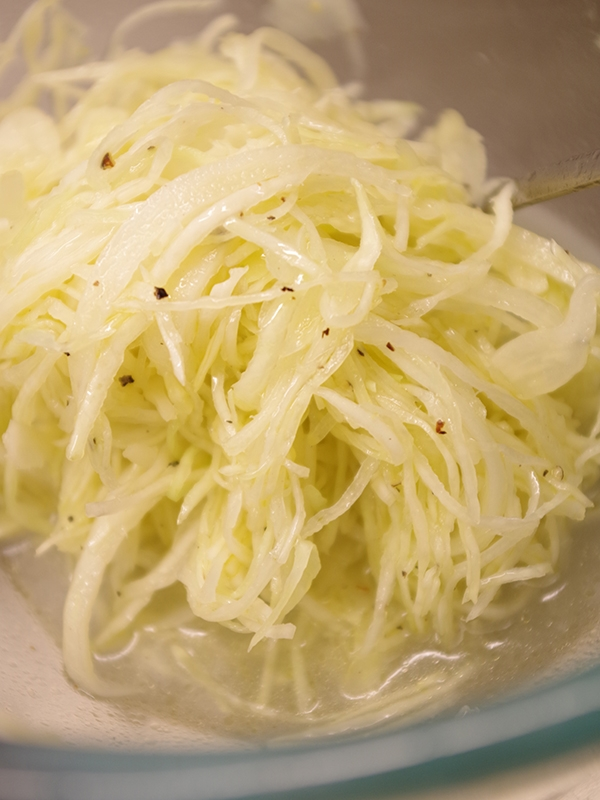

Bosses Pizzasallad

Ingredienser (4 Portioner)
- 500g Vitkål
- 2 tsk salt
- 1 dl rapsolja
- 1 kork Perstorps ättika
- 3-5 msk vitvinsvinäger
- 1.5 msk socker
- 1 msk Vegeta
Instruktioner
- Finstrimla vitkålen
- Lägg den i durkslag. Koka upp 2 l vatten och häll över vitkålen. Låt den rinna av
- Blanda olja, vinäger, ättika, socker och vegeta med kålen. Smaka av med salt och peppar.
- Låt stå kallt någon timme före servering